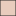

<!doctype html>
<html lang="en">
    <head>
        <meta charset="utf-8">
        <meta http-equiv="X-UA-Compatible" content="IE=edge">
        <meta name="viewport" content="initial-scale=1,user-scalable=no,maximum-scale=1,width=device-width">
        <meta name="mobile-web-app-capable" content="yes">
        <meta name="apple-mobile-web-app-capable" content="yes">
        <link rel="stylesheet" href="css/leaflet.css"><link rel="stylesheet" href="css/L.Control.Locate.min.css">
        <link rel="stylesheet" href="css/qgis2web.css"><link rel="stylesheet" href="css/fontawesome-all.min.css">
        <link rel="stylesheet" href="css/leaflet-control-geocoder.Geocoder.css">
        <link rel="stylesheet" href="css/leaflet-measure.css">
        <style>
        html, body, #map {
            width: 100%;
            height: 100%;
            padding: 0;
            margin: 0;
        }
        </style>
        <title>Geovisor Capas Cali</title>
    </head>
    <body>
        <div id="map">
        </div>
        <script src="js/qgis2web_expressions.js"></script>
        <script src="js/leaflet.js"></script><script src="js/L.Control.Locate.min.js"></script>
        <script src="js/leaflet.rotatedMarker.js"></script>
        <script src="js/leaflet.pattern.js"></script>
        <script src="js/leaflet-hash.js"></script>
        <script src="js/Autolinker.min.js"></script>
        <script src="js/rbush.min.js"></script>
        <script src="js/labelgun.min.js"></script>
        <script src="js/labels.js"></script>
        <script src="js/leaflet-control-geocoder.Geocoder.js"></script>
        <script src="js/leaflet-measure.js"></script>
        <script src="data/Barrios_1.js"></script>
        <script src="data/Ros_2.js"></script>
        <script src="data/Nomenclaturadevas_3.js"></script>
        <script src="data/Sitiosdeinteres_4.js"></script>
        <script>
        var map = L.map('map', {
            zoomControl:true, maxZoom:25, minZoom:2
        }).fitBounds([[3.2766045067815863,-76.77858521891648],[3.525076985420549,-76.31953554434259]]);
        var hash = new L.Hash(map);
        map.attributionControl.setPrefix('<a href="https://github.com/tomchadwin/qgis2web" target="_blank">qgis2web</a> &middot; <a href="https://leafletjs.com" title="A JS library for interactive maps">Leaflet</a> &middot; <a href="https://qgis.org">QGIS</a>');
        var autolinker = new Autolinker({truncate: {length: 30, location: 'smart'}});
        L.control.locate({locateOptions: {maxZoom: 19}}).addTo(map);
        var measureControl = new L.Control.Measure({
            position: 'topleft',
            primaryLengthUnit: 'meters',
            secondaryLengthUnit: 'kilometers',
            primaryAreaUnit: 'sqmeters',
            secondaryAreaUnit: 'hectares'
        });
        measureControl.addTo(map);
        document.getElementsByClassName('leaflet-control-measure-toggle')[0]
        .innerHTML = '';
        document.getElementsByClassName('leaflet-control-measure-toggle')[0]
        .className += ' fas fa-ruler';
        var bounds_group = new L.featureGroup([]);
        function setBounds() {
        }
        map.createPane('pane_Mapabase_0');
        map.getPane('pane_Mapabase_0').style.zIndex = 400;
        var layer_Mapabase_0 = L.tileLayer('http://www.google.cn/maps/vt?lyrs=m@189&gl=cn&x={x}&y={y}&z={z}', {
            pane: 'pane_Mapabase_0',
            opacity: 1.0,
            attribution: '<a href="https://www.google.com/intl/zh-CN_cn/permissions/geoguidelines/attr-guide.html">地图数据 ©2016 Google</a>',
            minZoom: 2,
            maxZoom: 25,
            minNativeZoom: 0,
            maxNativeZoom: 21
        });
        layer_Mapabase_0;
        map.addLayer(layer_Mapabase_0);
        function pop_Barrios_1(feature, layer) {
            var popupContent = '<table>\
                    <tr>\
                        <th scope="row">BARRIO</th>\
                        <td>' + (feature.properties['BARRIO'] !== null ? autolinker.link(feature.properties['BARRIO'].toLocaleString()) : '') + '</td>\
                    </tr>\
                    <tr>\
                        <th scope="row">COMUNA</th>\
                        <td>' + (feature.properties['COMUNA'] !== null ? autolinker.link(feature.properties['COMUNA'].toLocaleString()) : '') + '</td>\
                    </tr>\
                    <tr>\
                        <th scope="row">ESTRA_MODA</th>\
                        <td>' + (feature.properties['ESTRA_MODA'] !== null ? autolinker.link(feature.properties['ESTRA_MODA'].toLocaleString()) : '') + '</td>\
                    </tr>\
                </table>';
            layer.bindPopup(popupContent, {maxHeight: 400});
        }

        function style_Barrios_1_0() {
            return {
                pane: 'pane_Barrios_1',
                opacity: 1,
                color: 'rgba(35,35,35,1.0)',
                dashArray: '',
                lineCap: 'butt',
                lineJoin: 'miter',
                weight: 1.0, 
                fill: true,
                fillOpacity: 1,
                fillColor: 'rgba(232,204,189,1.0)',
                interactive: true,
            }
        }
        map.createPane('pane_Barrios_1');
        map.getPane('pane_Barrios_1').style.zIndex = 401;
        map.getPane('pane_Barrios_1').style['mix-blend-mode'] = 'normal';
        var layer_Barrios_1 = new L.geoJson(json_Barrios_1, {
            attribution: '',
            interactive: true,
            dataVar: 'json_Barrios_1',
            layerName: 'layer_Barrios_1',
            pane: 'pane_Barrios_1',
            onEachFeature: pop_Barrios_1,
            style: style_Barrios_1_0,
        });
        bounds_group.addLayer(layer_Barrios_1);
        map.addLayer(layer_Barrios_1);
        function pop_Ros_2(feature, layer) {
            var popupContent = '<table>\
                    <tr>\
                        <th scope="row">NOMBRE</th>\
                        <td>' + (feature.properties['NOMBRE'] !== null ? autolinker.link(feature.properties['NOMBRE'].toLocaleString()) : '') + '</td>\
                    </tr>\
                    <tr>\
                        <th scope="row">AREA</th>\
                        <td>' + (feature.properties['AREA'] !== null ? autolinker.link(feature.properties['AREA'].toLocaleString()) : '') + '</td>\
                    </tr>\
                    <tr>\
                        <th scope="row">PERIMETRO</th>\
                        <td>' + (feature.properties['PERIMETRO'] !== null ? autolinker.link(feature.properties['PERIMETRO'].toLocaleString()) : '') + '</td>\
                    </tr>\
                </table>';
            layer.bindPopup(popupContent, {maxHeight: 400});
        }

        function style_Ros_2_0() {
            return {
                pane: 'pane_Ros_2',
                opacity: 1,
                color: 'rgba(35,35,35,1.0)',
                dashArray: '',
                lineCap: 'butt',
                lineJoin: 'miter',
                weight: 1.0, 
                fill: true,
                fillOpacity: 1,
                fillColor: 'rgba(2,100,246,1.0)',
                interactive: true,
            }
        }
        map.createPane('pane_Ros_2');
        map.getPane('pane_Ros_2').style.zIndex = 402;
        map.getPane('pane_Ros_2').style['mix-blend-mode'] = 'normal';
        var layer_Ros_2 = new L.geoJson(json_Ros_2, {
            attribution: '',
            interactive: true,
            dataVar: 'json_Ros_2',
            layerName: 'layer_Ros_2',
            pane: 'pane_Ros_2',
            onEachFeature: pop_Ros_2,
            style: style_Ros_2_0,
        });
        bounds_group.addLayer(layer_Ros_2);
        map.addLayer(layer_Ros_2);
        function pop_Nomenclaturadevas_3(feature, layer) {
            var popupContent = '<table>\
                    <tr>\
                        <th scope="row">JERARQUIA</th>\
                        <td>' + (feature.properties['HIERARCHY'] !== null ? autolinker.link(feature.properties['HIERARCHY'].toLocaleString()) : '') + '</td>\
                    </tr>\
                    <tr>\
                        <th scope="row">VELOCIDAD</th>\
                        <td>' + (feature.properties['VELOCIDAD'] !== null ? autolinker.link(feature.properties['VELOCIDAD'].toLocaleString()) : '') + '</td>\
                    </tr>\
                    <tr>\
                        <th scope="row">COMUNA</th>\
                        <td>' + (feature.properties['COMUNA'] !== null ? autolinker.link(feature.properties['COMUNA'].toLocaleString()) : '') + '</td>\
                    </tr>\
                    <tr>\
                        <th scope="row">BARRIO</th>\
                        <td>' + (feature.properties['BARRIO'] !== null ? autolinker.link(feature.properties['BARRIO'].toLocaleString()) : '') + '</td>\
                    </tr>\
                    <tr>\
                        <th scope="row">NOMBRE</th>\
                        <td>' + (feature.properties['NOMBRE'] !== null ? autolinker.link(feature.properties['NOMBRE'].toLocaleString()) : '') + '</td>\
                    </tr>\
                    <tr>\
                    </tr>\
                </table>';
            layer.bindPopup(popupContent, {maxHeight: 400});
        }

        function style_Nomenclaturadevas_3_0() {
            return {
                pane: 'pane_Nomenclaturadevas_3',
                opacity: 1,
                color: 'rgba(183,72,75,1.0)',
                dashArray: '',
                lineCap: 'square',
                lineJoin: 'bevel',
                weight: 1,
                fillOpacity: 0,
                interactive: true,
            }
        }
        map.createPane('pane_Nomenclaturadevas_3');
        map.getPane('pane_Nomenclaturadevas_3').style.zIndex = 403;
        map.getPane('pane_Nomenclaturadevas_3').style['mix-blend-mode'] = 'normal';
        var layer_Nomenclaturadevas_3 = new L.geoJson(json_Nomenclaturadevas_3, {
            attribution: '',
            interactive: true,
            dataVar: 'json_Nomenclaturadevas_3',
            layerName: 'layer_Nomenclaturadevas_3',
            pane: 'pane_Nomenclaturadevas_3',
            onEachFeature: pop_Nomenclaturadevas_3,
            style: style_Nomenclaturadevas_3_0,
        });
        bounds_group.addLayer(layer_Nomenclaturadevas_3);
        map.addLayer(layer_Nomenclaturadevas_3);
        function pop_Sitiosdeinteres_4(feature, layer) {
            var popupContent = '<table>\
                    <tr>\
                        <th scope="row">NOMBRE</th>\
                        <td>' + (feature.properties['NOMBRE'] !== null ? autolinker.link(feature.properties['NOMBRE'].toLocaleString()) : '') + '</td>\
                    </tr>\
                    <tr>\
                        <th scope="row">UBICACION</th>\
                        <td>' + (feature.properties['UBICACION'] !== null ? autolinker.link(feature.properties['UBICACION'].toLocaleString()) : '') + '</td>\
                    </tr>\
                    <tr>\
                        <th scope="row">TIPO</th>\
                        <td>' + (feature.properties['TIPO'] !== null ? autolinker.link(feature.properties['TIPO'].toLocaleString()) : '') + '</td>\
                    </tr>\
                    <tr>\
                        <th scope="row">BARRIO</th>\
                        <td>' + (feature.properties['BARRIO'] !== null ? autolinker.link(feature.properties['BARRIO'].toLocaleString()) : '') + '</td>\
                    </tr>\
                    <tr>\
                        <th scope="row">COMUNA</th>\
                        <td>' + (feature.properties['COMUNA'] !== null ? autolinker.link(feature.properties['COMUNA'].toLocaleString()) : '') + '</td>\
                    </tr>\
                </table>';
            layer.bindPopup(popupContent, {maxHeight: 400});
        }

        function style_Sitiosdeinteres_4_0() {
            return {
                pane: 'pane_Sitiosdeinteres_4',
                radius: 4.0,
                opacity: 1,
                color: 'rgba(35,35,35,1.0)',
                dashArray: '',
                lineCap: 'butt',
                lineJoin: 'miter',
                weight: 1,
                fill: true,
                fillOpacity: 1,
                fillColor: 'rgba(157,34,55,0.9764705882352941)',
                interactive: true,
            }
        }
        map.createPane('pane_Sitiosdeinteres_4');
        map.getPane('pane_Sitiosdeinteres_4').style.zIndex = 404;
        map.getPane('pane_Sitiosdeinteres_4').style['mix-blend-mode'] = 'normal';
        var layer_Sitiosdeinteres_4 = new L.geoJson(json_Sitiosdeinteres_4, {
            attribution: '',
            interactive: true,
            dataVar: 'json_Sitiosdeinteres_4',
            layerName: 'layer_Sitiosdeinteres_4',
            pane: 'pane_Sitiosdeinteres_4',
            onEachFeature: pop_Sitiosdeinteres_4,
            pointToLayer: function (feature, latlng) {
                var context = {
                    feature: feature,
                    variables: {}
                };
                return L.circleMarker(latlng, style_Sitiosdeinteres_4_0(feature));
            },
        });
        bounds_group.addLayer(layer_Sitiosdeinteres_4);
        map.addLayer(layer_Sitiosdeinteres_4);
            var title = new L.Control();
            title.onAdd = function (map) {
                this._div = L.DomUtil.create('div', 'info');
                this.update();
                return this._div;
            };
            title.update = function () {
                this._div.innerHTML = '<h2>Geovisor Capas Cali</h2>';
            };
            title.addTo(map);
            var abstract = new L.Control({'position':'bottomleft'});
            abstract.onAdd = function (map) {
                this._div = L.DomUtil.create('div',
                'leaflet-control abstract');
                this._div.id = 'abstract'

                    abstract.show();
                    return this._div;
                };
                abstract.show = function () {
                    this._div.classList.remove("abstract");
                    this._div.classList.add("abstractUncollapsed");
                    this._div.innerHTML = 'Aquí encontrarás capas correspondientes a ríos, barrios, nomenclatura vial y sitios de interes; en la ciudad de Cali.';
            };
            abstract.addTo(map);
        var osmGeocoder = new L.Control.Geocoder({
            collapsed: true,
            position: 'topleft',
            text: 'Search',
            title: 'Testing'
        }).addTo(map);
        document.getElementsByClassName('leaflet-control-geocoder-icon')[0]
        .className += ' fa fa-search';
        document.getElementsByClassName('leaflet-control-geocoder-icon')[0]
        .title += 'Search for a place';
        var baseMaps = {};
        L.control.layers(baseMaps,{' Sitios de interes': layer_Sitiosdeinteres_4,' Nomenclatura de vías ': layer_Nomenclaturadevas_3,' Ríos': layer_Ros_2,' Barrios': layer_Barrios_1,"Mapa base": layer_Mapabase_0,},{collapsed:false}).addTo(map);
        setBounds();
        var i = 0;
        layer_Ros_2.eachLayer(function(layer) {
            var context = {
                feature: layer.feature,
                variables: {}
            };
            layer.bindTooltip((layer.feature.properties['NOMBRE'] !== null?String('<div style="color: #000000; font-size: 10pt; font-family: \'MS Shell Dlg 2\', sans-serif;">' + layer.feature.properties['NOMBRE']) + '</div>':''), {permanent: true, offset: [-0, -16], className: 'css_Ros_2'});
            labels.push(layer);
            totalMarkers += 1;
              layer.added = true;
              addLabel(layer, i);
              i++;
        });
        resetLabels([layer_Barrios_1,layer_Ros_2]);
        map.on("zoomend", function(){
            resetLabels([layer_Barrios_1,layer_Ros_2]);
        });
        map.on("layeradd", function(){
            resetLabels([layer_Barrios_1,layer_Ros_2]);
        });
        map.on("layerremove", function(){
            resetLabels([layer_Barrios_1,layer_Ros_2]);
        });
        </script>
    </body>
</html>
